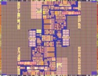

FreeBSD/ia64 Project
Rechercher dans la base de PRs de FreeBSD/ia64:
Ce qu'il reste à faire
Cette page essaye d'être un point de départ pour les personnes qui veulent trouver quelque chose à faire. L'ordre des tâches de cette page n'est pas une indication de priorité stricte, mais c'est une bonne indication. Il y a d'autres tâches qui ne sont pas mentionnées ici, mais qui doivent néanmoins être réalisées. Un exemple typique est la maintenance des pages web ia64... malheureusement.
Devenir une plateforme de niveau 1
Avec deux versions en tant que plateforme de niveau 2 à son actif, il est temps de devenir une plateforme de niveau 1. Ceci comprend des tâches aussi variées que:
- Améliorer le processus d'installation pour prendre en compte un GPT avec une partition EFI existante, comprenant d'autres systèmes d'exploitation. La possibilié de rajouter FreeBSD au menu de démarrage EFI serait une bonne chose.
- Porter le debugger GNU. Il manque cruellement sur une machine de développement et est requis sur les plateformes de niveau 1.
- Porter le serveur X (ports/x11/XFree86-4-Server). Pas indispensable pour un statut de niveau 1, mais on ne peut pas faire sans si l'on veut utiliser ia64 comme machine de bureau.
Logiciels portés et paquetages
Une tâche très importante pour le succès de FreeBSD sur ia64 est de s'assurer que les utilisateurs puissent exécuter autre chose que ls(1). Notre collection immense de logiciels portés s'est principalement focalisée par le passé sur ia32, et il n'est pas étonnant que de nombreux logiciels portés ne compilent pas ou ne fonctionnent pas sur ia64. Regardez ici pour une liste à jour des logiciels portés qui ne compilent pas pour une raison ou pour une autre. Veuillez noter que si des logiciels portés dépendent d'un ou plusieurs logiciels portés cassés, ceux-ci ne sont pas compilés et comptés. Un bon moyen d'aider est de travailler sur les logiciels portés qui ont beaucoup de de dépendances (voir la colonne "Aff." dans le tableau).
Affûter la scie
De nombreuses fonctions (plus particulièrement des routines en assembleur) ont été écrites pour combler une fonctionnalité manquante, sans aucune considération de vitesse et/ou robustesse. Une revue de ces fonctions et un remplacement si nécessaire est une bonne tâche qui peut être menée en parrallèle et indépendamment d'autres activités et ne requièrent pas de connaissances et/ou d'expérience particulières.
Développement central
Dans les choses de haut niveau qui ne marchent pas ou n'existent pas, il y aussi des choses qui impliquent une réécriture des fondations et qui affectent potentiellement les autres plateformes également. Ceci comprend:
- Améliorer la stabilité UP et SMP en améliorant le module PMAP. La gestion bas niveau des translations VM doit être améliorée. Ceci inclut aussi bien l'exactitude que la performance.
- Des pilotes de base comme sio(4) et syscons(4) ne fonctionnent pas sur les machines ia64 qui ne supportent pas les anciens périphériques. C'est un gros problème, car cela concerne toutes les plateformes et pourrait nécessiter la réécriture de grosses parties de certains sous systèmes. Cette tâche a besoin d'un support massif et de coordination.
- Une meilleure gestion des configurations de mémoire (physique) clairsemée en ne créant pas de tableaux de la VM qui recouvrent tout l'espace d'addressage, mais qui couvrent plutôt les morceaux de mémoire qui sont présents. Nous sommes actuellement obligés d'ignorer de la mémoire à cause de cela.